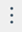

Controlling audio
With various settings, you can control sounds while you use Sametime meetings and chat.
About this task
To control sounds for notifications, tap on the app menu.
- When you turn off the Show notification setting, no notifications are received.
- When you turned on the setting, you can select from the notification list settings for individual notifications.
You can mute individual chat conversations from the conversation screen by using one of the
following methods:
- From the chat list, swipe left on the conversation to mute. Tap the audio icon to turn off the sound. To turn sound back on, swipe left and tap the audio icon.
- Open the conversation and tap the menu icon () located at the upper right corner and tap Mute. To turn sound back on, return to the menu and tap Unmute.
By using the meeting settings, you can set initial audio settings for the times when you join or start a meeting. You can use the sound icon during the meeting to override the initial settings.